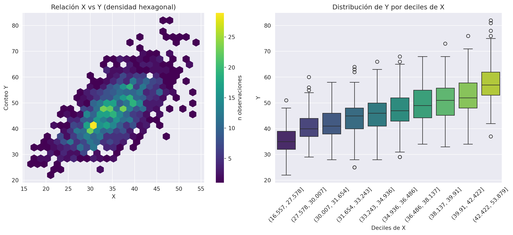
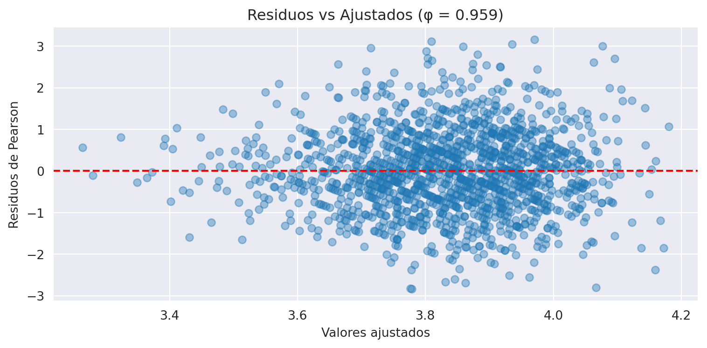

Code
import numpy as np
import pandas as pd
import matplotlib.pyplot as plt
import seaborn as sns
import statsmodels.formula.api as smf
from scipy import stats
from scipy.optimize import minimize
sns.set_style('darkgrid')
np.random.seed(44)Este notebook implementa el GLM Poisson desde cero sobre datos simulados, donde el verdadero valor de los parámetros es conocido. El objetivo es verificar que la teoría funciona cuando los datos se portan bien — antes de enfrentar datos reales con sobredispersión.
Contenido: 1. Formulación del GLM Poisson 2. Simulación de datos 3. MLE manual con scipy.optimize 4. Verificación con statsmodels 5. Diagnóstico de sobredispersión
\[Y_i \sim \text{Poisson}(\lambda_i), \quad i = 1, \ldots, n\]
\[\log(\lambda_i) = \eta_i = \mathbf{x}_i^\top \boldsymbol{\beta}\]
donde \(\mathbf{x}_i = (1, x_{i1}, \ldots, x_{ip})^\top\) y \(\boldsymbol{\beta} = (\beta_0, \beta_1, \ldots, \beta_p)^\top\).
La función de enlace logarítmica garantiza \(\lambda_i > 0\) para cualquier valor de \(\eta_i\).
La función de masa de probabilidad de Poisson es:
\[P(Y_i = y_i \mid \lambda_i) = \frac{e^{-\lambda_i} \lambda_i^{y_i}}{y_i!}\]
La log-verosimilitud del vector de observaciones \((y_1, \ldots, y_n)\) es:
\[\ell(\boldsymbol{\beta}) = \sum_{i=1}^n \left[ y_i \cdot \mathbf{x}_i^\top \boldsymbol{\beta} - e^{\mathbf{x}_i^\top \boldsymbol{\beta}} - \log(y_i!) \right]\]
Como \(\log(y_i!)\) no depende de \(\boldsymbol{\beta}\), maximizamos la forma reducida:
\[\ell(\boldsymbol{\beta}) \propto \sum_{i=1}^n \left[ y_i \cdot \mathbf{x}_i^\top \boldsymbol{\beta} - e^{\mathbf{x}_i^\top \boldsymbol{\beta}} \right]\]
Definiendo \(\mu_i = e^{\mathbf{x}_i^\top \boldsymbol{\beta}}\) (media condicional):
Gradiente (score):
\[\nabla_{\boldsymbol{\beta}} \ell = \mathbf{X}^\top (\mathbf{y} - \boldsymbol{\mu})\]
donde \(\boldsymbol{\mu} = (\mu_1, \ldots, \mu_n)^\top\).
Hessiana (negativa definida en el máximo):
\[\mathbf{H} = -\mathbf{X}^\top \mathbf{W} \mathbf{X}, \quad \mathbf{W} = \text{diag}(\mu_1, \ldots, \mu_n)\]
Covarianza asintótica del estimador MLE:
\[\text{Cov}(\hat{\boldsymbol{\beta}}) \approx (-\mathbf{H})^{-1} = (\mathbf{X}^\top \mathbf{W} \mathbf{X})^{-1}\]
Esta es la Información de Fisher Observada evaluada en \(\hat{\boldsymbol{\beta}}\).
Para maximizar \(\ell(\boldsymbol{\beta})\) se aplica la actualización de Newton-Raphson:
\[\boldsymbol{\beta}^{(t+1)} = \boldsymbol{\beta}^{(t)} - \left[\mathbf{H}(\boldsymbol{\beta}^{(t)})\right]^{-1} \nabla \ell(\boldsymbol{\beta}^{(t)})\]
Sustituyendo gradiente y Hessiana:
\[\boldsymbol{\beta}^{(t+1)} = \boldsymbol{\beta}^{(t)} + \left(\mathbf{X}^\top \mathbf{W}^{(t)} \mathbf{X}\right)^{-1} \mathbf{X}^\top \left(\mathbf{y} - \boldsymbol{\mu}^{(t)}\right)\]
donde \(\mathbf{W}^{(t)} = \text{diag}(\mu_1^{(t)}, \ldots, \mu_n^{(t)})\) se actualiza en cada iteración.
La actualización anterior es algebraicamente equivalente a resolver en cada paso un problema de mínimos cuadrados ponderados (Iteratively Reweighted Least Squares, IRLS):
\[\boldsymbol{\beta}^{(t+1)} = \arg\min_{\boldsymbol{\beta}} \sum_{i=1}^n w_i^{(t)} \left(z_i^{(t)} - \mathbf{x}_i^\top \boldsymbol{\beta}\right)^2\]
con pesos \(w_i^{(t)} = \mu_i^{(t)}\) y respuesta ajustada:
\[z_i^{(t)} = \eta_i^{(t)} + \frac{y_i - \mu_i^{(t)}}{\mu_i^{(t)}}\]
donde \(\eta_i^{(t)} = \mathbf{x}_i^\top \boldsymbol{\beta}^{(t)}\) es el predictor lineal actual. IRLS es el algoritmo estándar de ajuste de GLMs implementado en statsmodels y R.
Para GLMs Poisson con \(\mathbf{X}\) de rango completo, la log-verosimilitud es estrictamente cóncava: la Hessiana \(\mathbf{H}\) es negativa definida para cualquier \(\boldsymbol{\beta}\), lo que garantiza:
import numpy as np
import pandas as pd
import matplotlib.pyplot as plt
import seaborn as sns
import statsmodels.formula.api as smf
from scipy import stats
from scipy.optimize import minimize
sns.set_style('darkgrid')
np.random.seed(44)Generamos datos donde el verdadero modelo es Poisson con parámetros conocidos. Usamos \(\log(x)\) como predictor para capturar relaciones multiplicativas.
Modelo verdadero:
\[\log(\lambda_i) = \beta_0 + \beta_1 \log(x_i), \quad \beta_0 = 1.0, \quad \beta_1 = 0.8\]
n = 1500
x = np.random.normal(loc=35, scale=6, size=n)
log_x = np.log(x)
# Parámetros verdaderos
beta_0_real, beta_1_real = 1.0, 0.8
lam = np.exp(beta_0_real + beta_1_real * log_x)
y = np.random.poisson(lam=lam, size=n)
df_sim = pd.DataFrame({'x': x, 'log_x': log_x, 'y': y})
print(f'n = {n}')
print(f'Parámetros reales: β₀ = {beta_0_real}, β₁ = {beta_1_real}')
print(f'Media de y: {y.mean():.3f} | Varianza de y: {y.var():.3f}')
print(f'Índice de dispersión D = {y.var()/y.mean():.3f} (esperado ≈ 1.0 para Poisson puro)')n = 1500
Parámetros reales: β₀ = 1.0, β₁ = 0.8
Media de y: 46.607 | Varianza de y: 84.121
Índice de dispersión D = 1.805 (esperado ≈ 1.0 para Poisson puro)En datos verdaderamente Poisson, la varianza condicional debe aproximarse a la media.
df_sim['x_cat'] = pd.qcut(df_sim['x'], q=10)
grupo = df_sim.groupby('x_cat', observed=False)['y'].agg(
n='count', media='mean', varianza='var'
).round(3)
grupo['D'] = (grupo['varianza'] / grupo['media']).round(3)
print(grupo) n media varianza D
x_cat
(16.557, 27.578] 150 35.427 27.602 0.779
(27.578, 30.007] 150 40.507 36.601 0.904
(30.007, 31.654] 150 41.713 39.669 0.951
(31.654, 33.243] 150 44.333 45.875 1.035
(33.243, 34.936] 150 46.067 49.418 1.073
(34.936, 36.486] 150 47.360 54.272 1.146
(36.486, 38.137] 150 49.500 51.755 1.046
(38.137, 39.91] 150 50.700 49.581 0.978
(39.91, 42.422] 150 52.973 49.556 0.935
(42.422, 53.879] 150 57.487 63.795 1.110fig, axes = plt.subplots(1, 2, figsize=(13, 6))
# Hexbin: relación X vs Y
hb = axes[0].hexbin(df_sim['x'], df_sim['y'], gridsize=25, cmap='viridis', mincnt=1)
plt.colorbar(hb, ax=axes[0], label='n observaciones')
axes[0].set(title='Relación X vs Y (densidad hexagonal)', xlabel='X', ylabel='Conteo Y')
# Boxplot por deciles
sns.boxplot(data=df_sim, x='x_cat', y='y', palette='viridis', ax=axes[1])
axes[1].set(title='Distribución de Y por deciles de X', xlabel='Deciles de X', ylabel='Y')
axes[1].tick_params(axis='x', rotation=45)
plt.tight_layout()
plt.show()/tmp/ipykernel_169708/3674485917.py:9: FutureWarning:
Passing `palette` without assigning `hue` is deprecated and will be removed in v0.14.0. Assign the `x` variable to `hue` and set `legend=False` for the same effect.
sns.boxplot(data=df_sim, x='x_cat', y='y', palette='viridis', ax=axes[1])
scipy.optimizeImplementamos directamente las tres funciones derivadas de la log-verosimilitud.
X_mat = np.column_stack([np.ones(n), log_x])
def poisson_nll(beta, X, y):
mu = np.exp(X @ beta)
return -np.sum(y * (X @ beta) - mu)
def poisson_gradient(beta, X, y):
mu = np.exp(X @ beta)
return -(X.T @ (y - mu))
def poisson_hessian(beta, X, y):
mu = np.exp(X @ beta)
return X.T * mu @ Xbeta_init = np.zeros(2)
res = minimize(
fun=poisson_nll, x0=beta_init, args=(X_mat, y),
method='Newton-CG', jac=poisson_gradient, hess=poisson_hessian
)
beta_hat = res.x
print('Optimización exitosa:', res.success)
print(f'β̂₀ = {beta_hat[0]:.4f} (real: {beta_0_real})')
print(f'β̂₁ = {beta_hat[1]:.4f} (real: {beta_1_real})')Optimización exitosa: True
β̂₀ = 1.0817 (real: 1.0)
β̂₁ = 0.7773 (real: 0.8)# Covarianza = inversa de la Hessiana observada
H = poisson_hessian(beta_hat, X_mat, y)
cov = np.linalg.inv(H)
se = np.sqrt(np.diag(cov))
z = beta_hat / se
p_vals = 2 * (1 - stats.norm.cdf(np.abs(z)))
z_crit = stats.norm.ppf(0.975)
print(f'\n{"Variable":<15} {"Coef":>8} {"SE":>8} {"z":>8} {"P>|z|":>8} {"[0.025":>8} {"0.975]":>8}')
print('-' * 65)
for i, name in enumerate(['Intercepto', 'log(x)']):
print(f'{name:<15} {beta_hat[i]:8.4f} {se[i]:8.4f} {z[i]:8.4f} '
f'{p_vals[i]:8.4f} {beta_hat[i]-z_crit*se[i]:8.4f} {beta_hat[i]+z_crit*se[i]:8.4f}')
Variable Coef SE z P>|z| [0.025 0.975]
-----------------------------------------------------------------
Intercepto 1.0817 0.0788 13.7307 0.0000 0.9273 1.2361
log(x) 0.7773 0.0221 35.1917 0.0000 0.7340 0.8206statsmodelsComparamos con la implementación de referencia. Los resultados deben ser idénticos.
model = smf.poisson(formula='y ~ log_x', data=df_sim)
results = model.fit(disp=0)
print(results.summary()) Poisson Regression Results
==============================================================================
Dep. Variable: y No. Observations: 1500
Model: Poisson Df Residuals: 1498
Method: MLE Df Model: 1
Date: Sun, 26 Apr 2026 Pseudo R-squ.: 0.1130
Time: 21:51:02 Log-Likelihood: -4967.3
converged: True LL-Null: -5600.5
Covariance Type: nonrobust LLR p-value: 2.443e-277
==============================================================================
coef std err z P>|z| [0.025 0.975]
------------------------------------------------------------------------------
Intercept 1.0817 0.079 13.731 0.000 0.927 1.236
log_x 0.7773 0.022 35.192 0.000 0.734 0.821
==============================================================================# Incident Rate Ratios (IRR): exp(coeficiente)
# Interpretación: por cada unidad que aumenta log(x), y se multiplica por IRR
irr = np.exp(results.params)
print('IRR (exp(coef)):')
print(irr.round(4))IRR (exp(coef)):
Intercept 2.9496
log_x 2.1756
dtype: float64Para datos simulados de forma verdaderamente Poisson, el índice φ debe ser ≈ 1. Si φ >> 1, habría sobredispersión y el modelo Poisson sería inadecuado.
\[\hat{\phi} = \frac{\chi^2_{\text{Pearson}}}{n - p}\]
phi = np.sum(results.resid_pearson**2) / results.df_resid
print(f'Dispersión estimada φ = {phi:.4f}')
if phi > 1.5:
print('⚠ Sobredispersión detectada (φ >> 1). Considerar Binomial Negativa.')
else:
print('✓ Dispersión aceptable para Poisson (φ ≈ 1). El supuesto se cumple.')
plt.figure(figsize=(8, 4))
plt.scatter(results.fittedvalues, results.resid_pearson, alpha=0.4)
plt.axhline(0, color='red', linestyle='--')
plt.xlabel('Valores ajustados')
plt.ylabel('Residuos de Pearson')
plt.title(f'Residuos vs Ajustados (φ = {phi:.3f})')
plt.tight_layout()
plt.show()Dispersión estimada φ = 0.9592
✓ Dispersión aceptable para Poisson (φ ≈ 1). El supuesto se cumple.
Cuando los datos provienen de un proceso verdaderamente Poisson:
statsmodelsEste es el caso ideal. En los notebooks 01 y 01b veremos que el dataset real (Horseshoe Crab Satellites) tiene φ ≈ 3.38 — el modelo Poisson no es adecuado. El EDA frecuentista motiva los modelos bayesianos que exploramos en los notebooks 03–05.